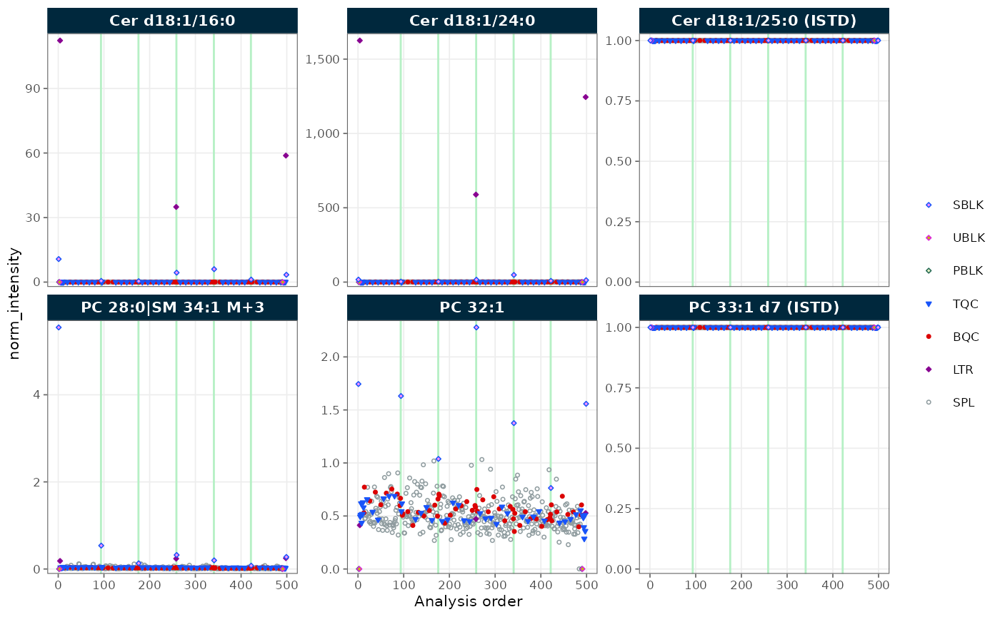
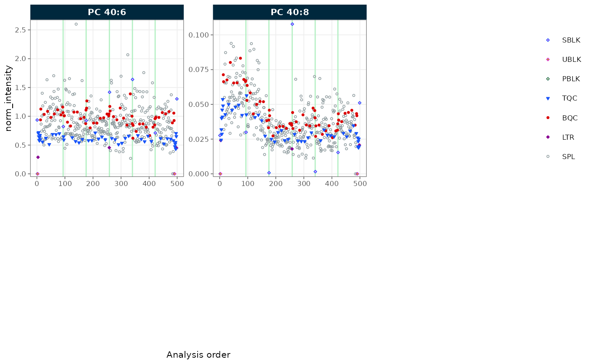
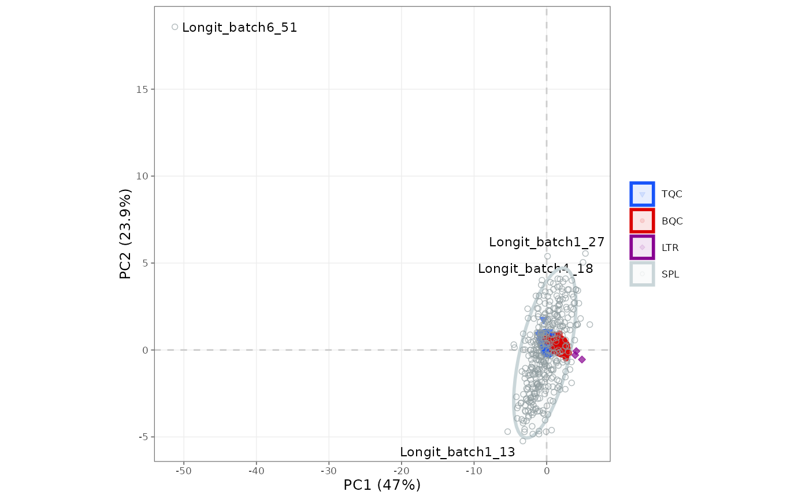

Getting started with MRMhub
Source:vignettes/articles/tutorial-02-getting-started-mrmhub.Rmd
tutorial-02-getting-started-mrmhub.RmdA MRMhub analysis is written as a Quarto document that mixes prose with the R code that produces the results, so the report and the analysis are one file. This tutorial runs a complete analysis of the bundled demonstration data — importing, normalizing, plotting, and exporting — using MRMhub functions alone, without any custom R code. After working through it you can open a fresh Quarto document and reproduce the same workflow on your own data.
New to R or Quarto notebooks? Getting started with R and Quarto notebooks installs the software and sets up the project this analysis runs in; the Installation guide covers installing MRMhub itself. For a first orientation to the terminology and data structure, see the MRMhub overview.
If you would rather not write code, build_workflow()
opens an interactive app that validates your data and metadata and
generates an equivalent Quarto workflow to download (see Build a workflow without
code); the notebook below remains the reproducible path.
1. The setup chunk
The first chunk of an analysis loads the packages and sets defaults
that apply throughout. Loading MRMhub makes its functions available;
mrmhub_enable_cli_color() colours the console messages in
the rendered report; and mrmhub_set_plot_defaults() sets a
house font size and resolution for every figure, so individual plots
need not repeat them.
library(mrmhub)
mrmhub_enable_cli_color()
mrmhub_set_plot_defaults(font_base_size = 8)Figure dimensions are controlled by Quarto itself, through the
document’s fig-width and fig-height options;
Quarto workflows explains
how those interact with MRMhub’s plot sizing.
2. Load the data
Every analysis begins with a MRMhubExperiment — the
container that holds the data and every result computed from it (see The MRMhubExperiment object). We
create an empty one and import the demonstration dataset bundled with
the package. Using system.file() locates that file wherever
the package is installed, so the code runs unchanged on any machine; in
your own project you would instead give the path to a file in
data/.
demo_file <- system.file("extdata", "MRMhub_demo.tsv", package = "mrmhub")
mexp <- MRMhubExperiment()
mexp <- import_data_mrmhub(
mexp,
path = demo_file,
import_metadata = TRUE)✔ Imported 499 analyses with 28 features.ℹ feature_area selected as default feature intensity. Modify with `set_intensity_var()`.✔ Analysis metadata associated with 499 analyses.✔ Feature metadata associated with 28 features.Setting import_metadata = TRUE reads the sample and
internal-standard annotations embedded in the INTEGRATOR file at the
same time. MRMhub reads several other formats; Importing analytical data has a
decision flowchart and the full importer reference.
3. Process the data
The core processing step normalizes each feature to its assigned
internal standard, which corrects for extraction and injection
variation. The result is stored in the
feature_norm_intensity variable, leaving the raw
intensities untouched.
mexp <- normalize_by_istd(mexp)✔ 19 features normalized with 9 ISTDs in 499 analyses.This is the shortest useful pipeline. A real study usually adds drift and batch correction and QC filtering in a set order; Lipidomics data processing and Drift and batch correction build on the object from here.
4. Check the processing status
mrmhub_status() prints a report of what was imported,
which processing steps have run, and which stages still lie ahead — the
quickest way to confirm the object is in the state you expect before
moving on.
mrmhub_status(mexp)── MRMhubExperiment ────────────────────────────────────────────────────────────Title:Last step: ISTD-normalized data | signal: feature_area── Samples (499 analyses, 6 batches) ──• Study samples & QCs (488): TQC 48, BQC 59, LTR 3, SPL 378• Blanks & other (11): SBLK 7, UBLK 2, PBLK 2── Features (28) ──• Analytes: 19 Internal standards: 9• Quantifiers: 28 Qualifiers: 0── Metadata ──• Analyses/samples: ✔ (499) Features/analytes: ✔ (28) Internal standards: ✖• Response curves: ✖ Calibrants/QC concentrations: ✖ Study samples: ✖
Interferences: ✖── Processing Status ──• Isotope / interference corrected: ✖• ISTD normalized: ✔ Quantitated: ✖• Drift corrected variables: ✖• Batch corrected variables: ✖• QC metrics calculated: ✖ Feature filtering applied: ✖── Exclusion of Analyses and Features ──• Analyses manually excluded (`analysis_id`): ✖• Features manually excluded (`feature_id`): ✖5. Plot signals across the run
A run-scatter plot shows each feature’s signal against injection order — a quick check for trends or outliers. We plot the normalized intensities for two lipid classes, selected by a regular expression on their names.
plot_runscatter(
mexp,
variable = "norm_intensity",
include_feature_filter = "^(Cer|PC)",
rows_page = 2, cols_page = 3)
Figure 1. Normalized intensities of Cer and PC features across injection order.

Figure 1. Normalized intensities of Cer and PC features across injection order.
To save the plot to a file instead of showing it,
plot_runscatter() can write a multi-page PDF — one page per
grid of features — directly to output/:
plot_runscatter(
mexp,
variable = "norm_intensity",
include_feature_filter = "^(Cer|PC)",
rows_page = 2, cols_page = 3,
output_pdf = TRUE,
path = "output/runscatter.pdf")6. Run a PCA
A principal-component analysis (PCA) summarises all features at once, placing each sample in a plane so that similar samples fall close together — useful for spotting QC clustering or outliers.
plot_pca(mexp, variable = "norm_intensity")
Figure 2. PCA of the normalized intensities, coloured by QC type.
To keep a copy of the figure, pipe it into save_plot().
Because save_plot() returns the plot visibly, one line both
writes the PDF and still renders the figure in the report;
width and height are in millimetres:
plot_pca(mexp, variable = "norm_intensity") |>
save_plot("output/pca.pdf", width = 180, height = 120)Giving save_plot() a path with no extension and
format = c("pdf", "png") writes both formats at once; Visualisation functions lists
the plots available at each stage.
7. Export results
Finally, export the results for downstream use. A single-variable CSV
gives a plain table of normalized intensities, and
save_report_xlsx() writes a multi-sheet Excel workbook
holding every data table and QC metric in one file. In this short
pipeline those QC-metric and filtered-data sheets are still empty; they
populate once calc_qc_metrics() and
filter_features_qc() have run, as in the lipidomics workflow.
save_dataset_csv(
mexp,
path = "output/norm_intensities.csv",
variable = "norm_intensity")
save_report_xlsx(
mexp,
path = "output/report.xlsx",
filtered_variable = "norm_intensity")The complete processing state can also be serialized to a single
.rds file:
saveRDS(mexp, file = "output/experiment.rds")The .rds preserves the entire
MRMhubExperiment, so a colleague can open it in R and
reproduce the exact data state — running their own plots and QC checks —
without re-running the pipeline.
With these chunks written, click Render once more:
RStudio runs the whole analysis top to bottom and produces a
self-contained report, with the CSV, PDFs, Excel workbook, and saved
object waiting in output/.
Next steps
- Lipidomics data processing: the full pipeline with quantification and QC filtering
- Drift and batch correction: correcting run-order and batch effects
- Exploring QC: RunScatter and PCA: QC visualisation in depth
- Quarto workflows: rendering, figure sizing, and report options